Setup Guide — from a fresh install to your first live roll on stream.
Get the mod and the app from either source below — same files, your pick.
.exe)
Install GAMMA Randomizer Slot Machine by rip_perri with MO2, like any other regular mod.
Important: do not rename the mod, and choose the Anomaly Launcher when running GAMMA — debug mode is not required.
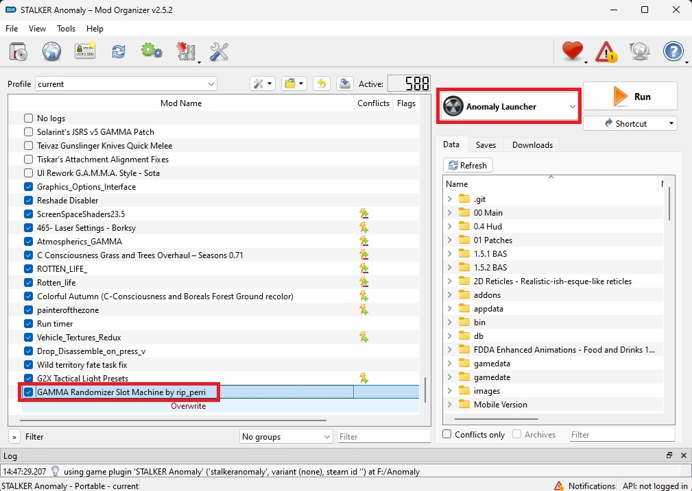
Launch the GAMMA Slot Machine.exe app. The Settings page opens
automatically in your browser, and the app keeps running locally at
localhost:7770 for as long as you want the roulette to react to
Twitch.
Launch the app. Its window confirms it found your GAMMA install and tells you Twitch isn't connected yet.
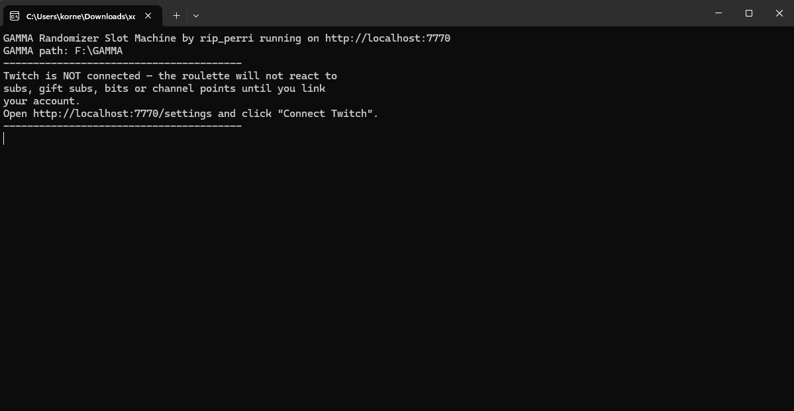
On the Settings page, click Connect Twitch.
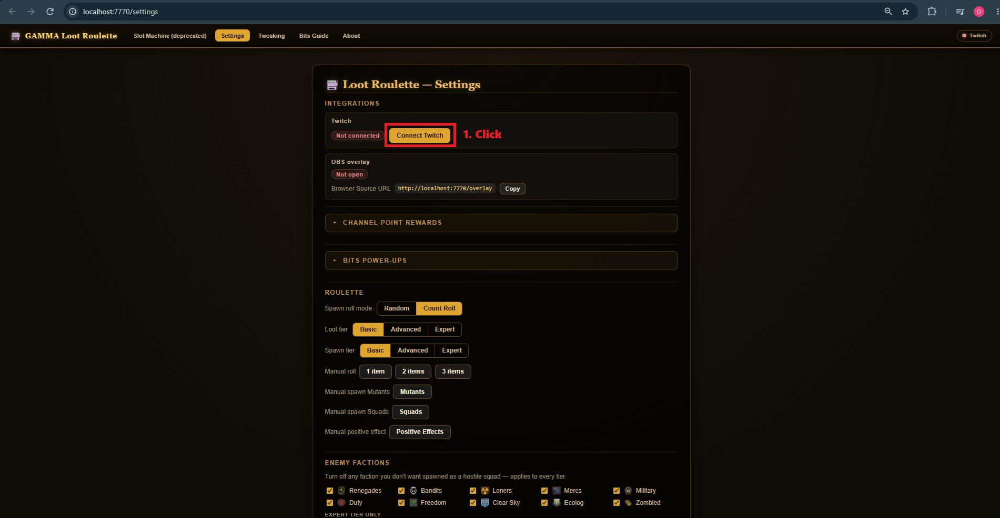
A code appears in the app and a Twitch activation page opens in your browser. Click Activate.
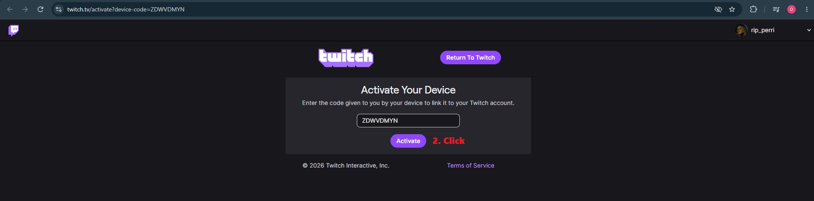
Twitch asks you to confirm access for the app — click Authorize.
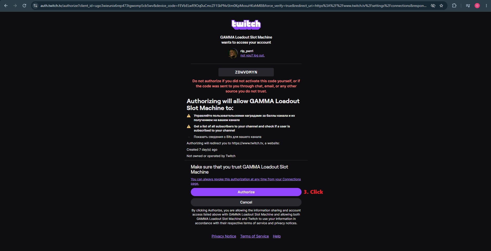
Back in Settings, Twitch now shows Connected and Listening, and your four channel-point rewards are created and enabled automatically. While you're here, copy the Browser Source URL — you'll need it in the next part.
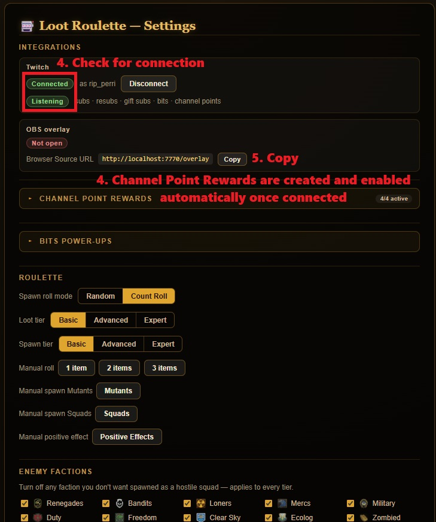
In OBS, click + under Sources, choose Browser, then Add a new Browser.
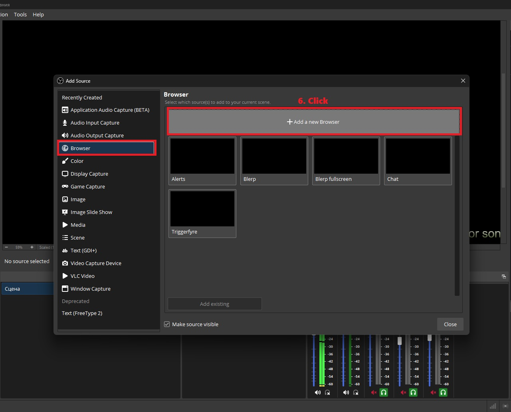
Paste the overlay URL you copied, then set Width to
1200 and Height to 600. Click
OK.
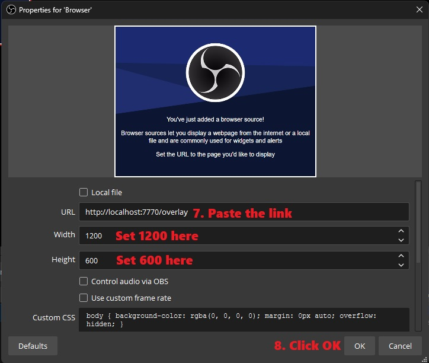
Back in Settings, the OBS overlay row should now show Connected too.
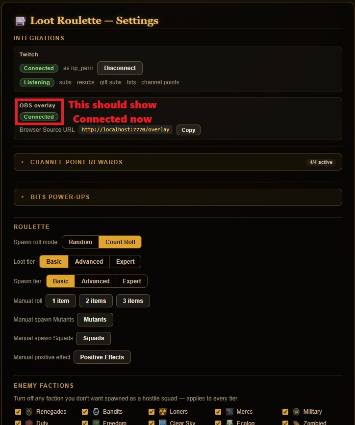
The app's console confirms everything is wired up: channel-point rewards ready, Twitch EventSub connected, and subscribed to subs, gift subs, resubs, channel points, and bits power-ups.
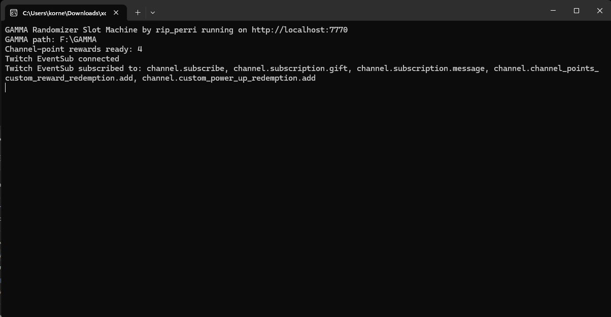
Trigger a manual roll from Settings to test it — the overlay plays out live in OBS with spinning reels and a final result.
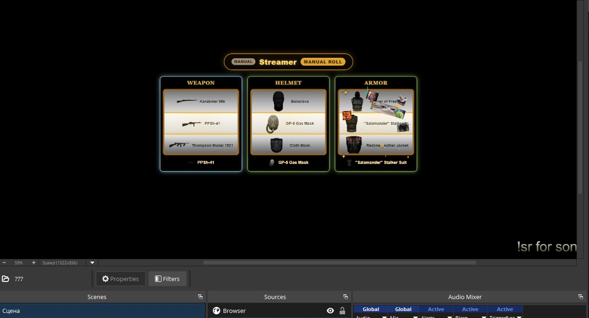
Every roll — loot, a spawn, or a positive effect — is logged live in the console as it queues, rolls, and delivers in-game.
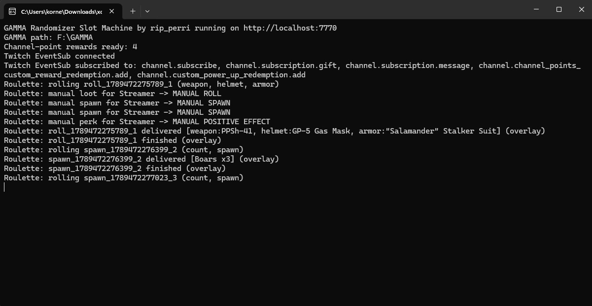
That's it — subs, resubs, gift subs, channel-point redemptions and bits power-ups will now trigger the roulette live on stream.